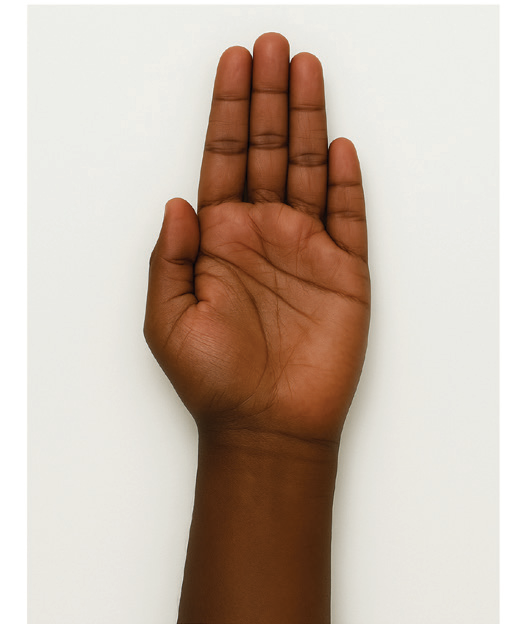
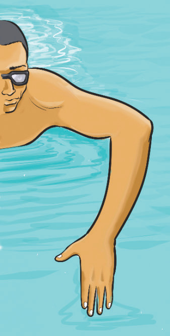

Use a high elbow position for strong, efficient strokes
In strokes like front crawl and butterfly, a high elbow catch allows swimmers to pull more water and generate forward movement with minimal resistance. In executing swimming strokes, keeping the elbow high during the recovery phase helps maintain a smooth, circular motion. A proper elbow position enhances stroke power and reduces drag, allowing the swimmer to move more efficiently through the water, Figure 3.18.

Coordinate arm movements with kicking and breathing
Each swimming stroke has a specific timing pattern that synchronizes arm strokes with leg kicks and breathing cycles. In front crawl and backstroke, one arm enters the water as the other recovers, while the legs continuously flutter kick. In breaststroke